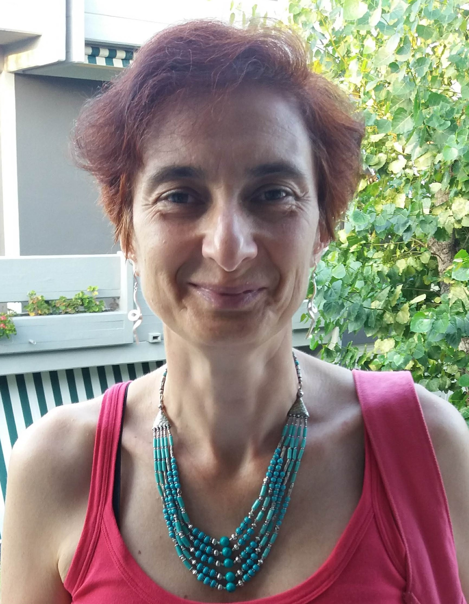

The BNP-ISBA board members
Alessandra Guglielmi. Section Chair 2025.
Alessandra is a Full Professor of Statistics in the Department of Mathematics, Politecnico di Milano (Italy). Her research interests are mainly focused on Bayesian nonparametric inference, with emphasis on mixture modelling and computational aspects of these class of models. For more information, visit her website.
Li Ma. Chair Elected 2025.
Li is Professor of Statistical Science at Duke University (USA). His current research interest includes tree-based methods, generative models, nonparametric modeling and inference, and applications to biomedical problems. For more information, visit his website.
Garritt Page. Past Chair 2025.
Garritt is an Associate Professor of Statistics in the Department of Statistics at Brigham Young University (USA). His main research interest lies in Bayesian nonparametrics with particular interest in developing statistical methods that are based on random partition models. For more information, visit his website.
Juhee Lee. Program Chair 2024-2025.
Juhee is a Professor of Statistics at the University of California, Santa Cruz (USA). She is specialized in Bayesian nonparametrics, and its applications in diverse fields such as biology and clinical trials. Her research focuses on statistical decision-making processes and survival analysis foror more information, visit her website.
Weining Shen. Treasurer 2024-2025.
Weining is a Associate professor of Statistics at UC Irvine (USA). His expertise spans Bayesian methods, biostatistics, imaging analysis, machine learning, nonparametric inference, causal inference, and sports analytics. For more information, visit his website.
Andrea Cremaschi. Secretary 2025-2026.
Andrea is Assistant professor in the School of Science and Techonology at IE University (Spain). His research focuses on both methodological and applied aspects of statistics, particularly within the Bayesian nonparametric framework. Some of his primary interests are mixture models with applications in biomedical studies, behavioral science and cohort studies. For more information, visit his website.
Past BNP-ISBA board members
| Section Chair | Program Chair | Secretary | Treasurer |
|---|---|---|---|
|
2024 - Alejandro Jara 2021 - Subhashis Ghosal 2020 - Fernando Quintana 2019 - Igor Pruenster 2018 - Peter Mueller 2017 - Wes Johnson 2015/2016 - Antonio Lijoi 2013/2014 - Steve MacEachern 2010/2012 - Stephen Walker |
2020/2021 - Alessandra Guglielmi 2018/2019 - Maria de Iorio 2016/2017 - Fernando Quintana 2014/2015 - Alejandro Jara 2012/2013 - Michele Guindani 2010/2011 - Ramsés Mena |
2023/2024 - Raffaele Argiento 2021/2022 - Andrés Felipe Barrientos 2019/2020 - Sara Wade 2017/2018 - Long Nguyen 2015/2016 - Li Ma 2013/2014 - Surya Tokdar 2010/2012 - Theodoros Nicoleris |
2020/2021 - Fabrizio Leisen 2018/2019 - Mingyuan Zhou 2016/2017 - Juhee Lee 2014/2015 - Alessandra Guglielmi 2012/2013 - Athanasios Kottas 2010/2011 - Maria Kalli |